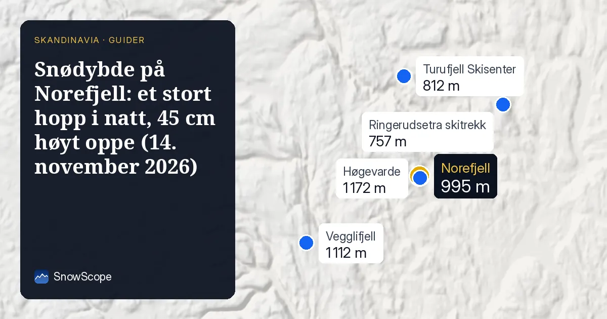

Snødybde på Norefjell: et stort hopp i natt, 45 cm høyt oppe (14. november 2026)
Norefjells øvre bakke våknet hvit 14. november etter en natt med kraftig snøfall. SnowScope-kartet viser bakken delt i tre distinkte soner: bar eller tynn ved foten, solid dekning over 600 m, og dyp snø på platået.
Se snøprognosen for Norefjell direkte i SnowScope-appenSnødybde, puddervarsler og 3D-kartet, gratis.

Tre forskjellige bakker på en dag
13. november viste Norefjell vintergeografien til en bratt bakke nær Oslo. Ved foten (194 m) målte værstasjonen ved Gulsvik 18 km borte 13 cm. Midt på bakken ved 594 m viser SnowScope omkring 15 til 20 cm. På topplatået nær 995 m når dybden 45 cm.
Denne spredningen er ikke tilfeldig. I løpet av de siste sju dagene falt omkring 14 cm på midt-bakken og toppen, men bare 8 cm ved foten. Forskjellen kommer fra temperatur og regn. Ved de laveste høydene falt mye av nedbøren som regn i stedet for snø, så foten bygde seg opp langsommere og mistet noe dekning på grunn av snøsmeltingen.

Problemet med varm fot
I løpet av de neste sju dagene forventes omkring 9 cm på toppen og 8 cm på midt-bakken, men bare et spor ved foten. Grunnen er snøgrensen. SnowScope viser den rundt 300 til 330 m, noe som betyr at regn dominerer under denne høyden. Omkring to tredjedeler av vannet som faller på de lavere bakkene vil komme som regn, ikke snø.
Dette er viktig for skisteder og veien oppover. Løyper ved foten blir tynne eller bare. Vegoverflaten blir slaps på dagen og isete om natta der regn faller på nysnø. Det praktiske rådet er å skiste på midt-bakkene og de øvre løypene inntil foten har bygd opp en tykkere base.
Normalt for mid-november er dypere
Norefjells 46 års historie viser hva en typisk 14. november ser ut som: 26 cm på toppen, 16 cm på midt-bakken, og 3 cm ved foten. Dagens topp-dybde på 45 cm er godt over den mediane verdien. Foten ved 13 cm ved Gulsvik ligger også foran det vanlige på 3 cm. Midt-bakken på 15 til 20 cm er omtrent på sporet.
Formen betyr like mye som tallene. Bakkens bratte profil—801 m vertikal over bare 7 km løyper—betyr at toppen blir snørik mens bunnen varmer opp fort. Innen 30. november stiger median-dybden på toppen til 56 cm. Innen 15. desember når den 64 cm. Foten holder seg vanligvis mye kortere: 20 cm innen 30. november og 31 cm ved mid-desember.
Vinterens lengde: øvre bakke vinner
Gjennom en typisk vinter viser SnowScope-kartet snø på bakken i 212 dager på toppen men bare 172 dager ved foten. Dette 40-dagers gapet er bygget inn i bakken. Når november-snøen kommer tidlig på toppen, holder den seg ofte til juni. Ved foten sletter ofte varme perioder og regn den bort.
Så langt denne vinteren fikk toppen 141 cm på toppen sin i forrige sesong, og 188 snødager falt der. Foten fikk bare 68 cm maksimaldybde og 147 snødager. Mønsteret er konsekvent: Norefjell belønner skisteder som går opp på bakken eller bruker heisen for å nå de øvre løypene.
Hva du kan forvente før foten blir solid
Nysnø falt på bar bakke eller tynn dekning, så steiner og lyng er bare under den hvite overflaten på ikke-preparert terreng. Preparerte løyper er tryggere inntil basen blir solid. Platået over heisene er utsatt for vind, lavt skydekke og tidlig mørke i mid-november—gå godt utrustet og dyktig, eller hold deg lavere.
Regn ved foten betyr at veien oppover blir våt og deretter frossen i frost-tine-syklusen som er typisk for høsten. Hvis du skal kjøre opp tidlig på morgenen, venter isdannelse. Utover dagen kan vann renne over de lavere bakkene. Innen to uker, hvis prognosen holder, burde kontinuerlig snø dekke foten, og bakken vil føles mer som ekte vinter.
Tips til skiløpere
- Skiste på midt-bakke til øvre løyper der snøen er dyp. Foten er tynn og gjemmer hindringer.
- Nysnø binder dårlig til bar bakke. Bli på preparert terreng inntil en tykkere base bygger seg under nytt snøfall.
- Veien oppover blir frossen om natta der regn faller på de lavere bakkene. Kjør oppover i dagslys.
- Platået og de øvre løypene er åpent terreng i november: vind, snøskredfare på bratt terreng, og mørke utover ettermiddagen. Gå med kunnskap eller bruk de lavere heisene.
- Sjekk Varsom snøskredvarsel før du går av-piste eller i kullene over heisene (https://www.varsom.no/).
Om tallene
Snødybdene for skistedene er det dypeste snødekket i de øvre bakkene på datoen som vises; de er anslag for et område, ikke en måling i ett punkt. Prognoser kan endre seg. Les alltid det offisielle snøskredvarselet før du kjører utenfor preparert løype.
Offisielle snøskredvarsler: Varsom (NVE)
Siter denne rapporten
For forskning, undervisning eller presse: tallene og diagrammene kan brukes fritt under CC BY 4.0 med denne kildehenvisningen.
SnowScope (2026), Snødybde på Norefjell: et stort hopp i natt, 45 cm høyt oppe (14. november 2026), https://snowscope.app/blog/nb/2026/11/norefjell-snow-depth-14-november-2026.html, hentet 2026-11-14
SnowScope (Atlas Labs). (2026, November 14). Snødybde på Norefjell: et stort hopp i natt, 45 cm høyt oppe (14. november 2026). SnowScope snow reports. https://snowscope.app/blog/nb/2026/11/norefjell-snow-depth-14-november-2026.html
BibTeX
@misc{snowscope2026norefjellsnowdepth14nove,
author = {{SnowScope (Atlas Labs)}},
title = {Snødybde på Norefjell: et stort hopp i natt, 45 cm høyt oppe (14. november 2026)},
year = {2026},
month = nov,
howpublished = {\url{https://snowscope.app/blog/nb/2026/11/norefjell-snow-depth-14-november-2026.html}},
note = {Published 2026-11-14 20:11 UTC; accessed 2026-11-14}
}· CC BY 4.0 · Metoder, data og verktøy →
Norefjell: snø og temperatur etter høyde, i vinter sammenlignet med i fjor (verktøy) →
Følg Norefjell
Gratis: en melding når nysnø er på vei, og prognosen hver morgen.